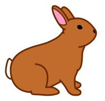

Cursul ScratchJr
10 lecții cu ScratchJr
De la două personaje care se întâlnesc la propriul joc cu surprize. Copiii construiesc, testează și aleg cum arată fiecare proiect.
- 6–7 ani
- 50 min / lecție
- O tabletă pentru fiecare copil
Înainte de curs · laptop și proiector
Lecția 0 · Picnicul întrerupt de ploaie
O poveste în patru scene ScratchJr: ocolim gardul, culegem mere, îi poftim pe prieteni la masă și îi adăpostim de ploaie. Adunăm și scădem pentru a afla câte mere mai culegem, pe cine mai servim și cine mai are nevoie de adăpost. Cinci exerciții de rezervă. Copiii propun codul și vin pe rând la laptop.
Proiectul ScratchJr și ghidul →
Alege lecția
Planul întregului curs · text- Lecția 01
Ne întâlnim la joacă
Două personaje, o întâlnire și un final inventat. Mini-puzzle: găsește drumul înapoi.
Deschide lecția 1 →Creația mea: Salutul inventat de mine.
- Lecția 02
Provocările iepurașului
Repetăm un grup de acțiuni. Construim patrulări, atingem o țintă și ne întoarcem.
Deschide lecția 2 →Creația mea: Patrula mea.
- Lecția 03
Atelierul de magie
Atingem, mărim, micșorăm și ascundem. Un spectacol de transformări, fără deplasări.
Deschide lecția 3 →Creația mea: Trucul meu de magician.
- Lecția 04
Telecomanda fermecată
Mesajele colorate pun personajele în mișcare: două comenzi și un lanț de trucuri.
Deschide lecția 4 →Creația mea: Telecomanda inventată de mine.
- Lecția 05
Fabrica de ritmuri
Construim coduri sonore cu Pop, pauze și repetiții. Ascultăm și recunoaștem tipare.
Deschide lecția 5 →Creația mea: Semnătura mea sonoră.
- Lecția 06
Parcul cu surprize
Contactul pornește o reacție. Creăm întâlniri, comori și un lanț de surprize.
Deschide lecția 6 →Creația mea: Surpriza întâlnirii.
- Lecția 07
Povestea cu două finaluri
Adăugăm pagini, două alegeri și drumuri de întoarcere. Copilul decide cum continuă povestea.
Deschide lecția 7 →Creația mea: Două alegeri care spun o poveste.
- Lecția 08
Statuile fermecate
Pornim o rutină continuă și o înghețăm. Controlăm artiștii separat și împreună.
Deschide lecția 8 →Creația mea: Coregrafia mea.
- Lecția 09
Insula misterioasă
O descoperire o deschide pe următoarea. Fiecare copil construiește și testează propriul joc.
Deschide lecția 9 →Creația mea: Secretul insulei mele.
- Lecția 10
Marea finală
Continuăm insula: artiști pe rând și întoarcere la final. Un joc complet, gata de rejucat.
Deschide lecția 10 →Creația mea: Finalul pe care îl semnez eu.
Pentru profesor · Cum folosim materialele?
Deschide lecția pentru cerințe și exemple. Ghidul online și PDF-ul includ exemplul oficial adaptat, ritmul de 50 de minute, atelierul personal și indicii; cartonașele arată țintele copiilor. Pachetul ZIP include materialele și proiectele demonstrative pentru pregătirea ta.
Copiii construiesc în aplicația ScratchJr de pe tabletă. În lecția 10 continuă proiectul salvat la lecția 9. Înainte de clasă, verifică pe un Lenovo pornirea, atingerea, salvarea și redeschiderea.